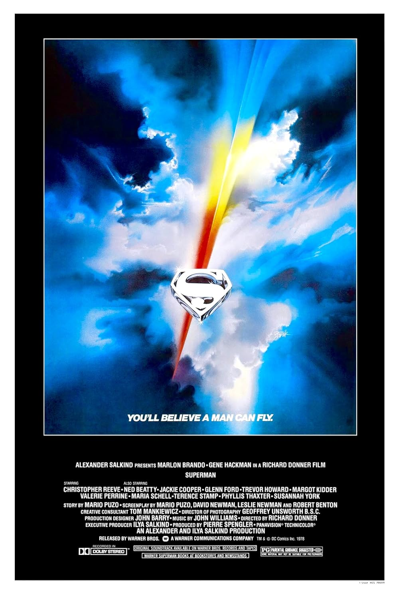

Superman
51st Academy Awards
(Oscars 1979)
3 Nominations, 1 Award*
| Nominations | ||
|---|---|---|
| Category | Nominees | Result |
| Film Editing | Stuart Baird | Nominated |
| Sound | Gordon K. McCallum, Graham Hartstone, Nicolas Le Messurier, and Roy Charman | Nominated |
| Music (Original Score) | John Williams | Nominated |
| Special Achievement Award (Visual Effects) | Colin Chilvers, Denys Coop, Derek Meddings, Les Bowie, Roy Field, and Zoran Perisic | Won |